Introduction
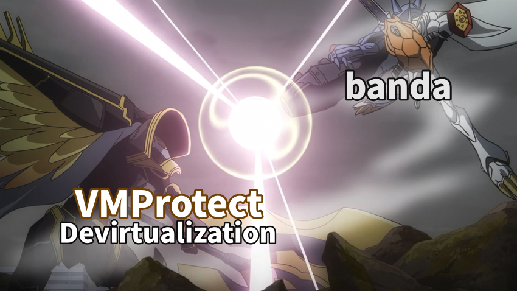
Hi, this is banda. :)
Thank you for giving VMProtect Part 1 more attention than I expected. But I still crave even more attention, so I am back with VMProtect Part 2. In line with the theory-oriented flow of the previous write-up, I wanted Part 2 to extend into a more real-world setting. This time, together with static analysis, we will actually decode functions virtualized by VMProtect 3 into a devirtualized binary / restored code and walk through that process as a hands-on exercise.
If you have not read it yet, I recommend checking out the previous post first: VMProtect Devirtualization Part 1.
This unpacking article is written purely for educational and research purposes. Please follow ethical guidelines and help keep the ecosystem healthy.
Devirtualization Rules
Before jumping into the challenge, let’s briefly recap the basic idea behind virtualization-based obfuscation. Normally, a program runs directly as machine code for a real CPU, such as x86 or x64. Tools like VMProtect or Themida do not leave this code as is. Instead, they:
- Convert original x86 code into a “virtual bytecode”
- Embed a virtual machine (VM) inside the binary that can interpret this bytecode
- At runtime, the VM executes by fetching and interpreting each bytecode instruction one by one
VM State Transition
To understand devirtualization, the key is to focus on “what state the VM maintains, and how that state changes when a handler executes.” The VM state can be defined as follows:
VIP: Virtual Instruction Pointer
VSP: Virtual Stack Pointer
VStack: values currently stored on the virtual stack
Scratch: temporary storage
VFlags: virtual flags (playing roles similar to ZF, CF, etc.)
No matter how heavy the obfuscation is, what ultimately matters is “how the bundle of state changes after each handler.” You can think of the VM not as a CPU, but as a collection of state-transition functions that take VIP, VStack, Scratch, and VFlags as input and produce new VIP, VStack, Scratch, and VFlags as output.
When analyzing a handler, instead of trying to understand every single instruction in the disassembly, the important part is to be able to summarize: “this handler transforms the VM state in this way.” Once you can say that, you have essentially understood that handler’s semantics.
DevirtualizeMe Challenge - VMP32 v1
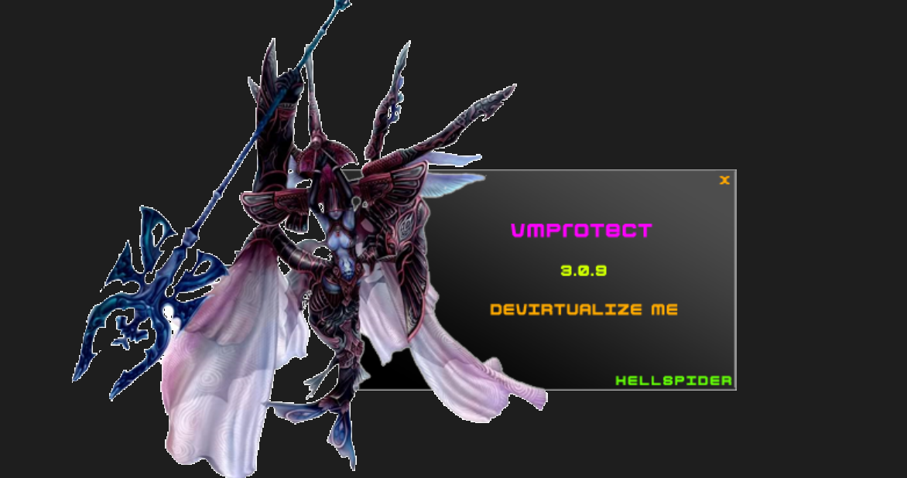
The challenge we will work on here is DevirtualizeMe from Tuts4You.
The program is structured around a C++ class named UnpackMe, and it is protected with VMProtect 3.0.9 using Virtualization mode. The goal of this post is to locate the functions that VMProtect has virtualized inside the attached binary, interpret the bytecode running on top of that VM, and reconstruct the original native-level logic as far as possible. The tools used are IDA, Detect It Easy, Triton, and a custom VMPTrace-style toolchain.
Challenge Information
Difficulty : 8
Language : C++
Platform : Windows x86
OS Version : All
Packer / Protector : VMProtect 3.0.9
Unpack goal
From the attached binary (.exe), analyze the virtualized function(s), apply a devirtualization patch, and ensure that the patched program runs without errors.
Condition:
When you press P, a virtualized function located in the VMP region runs and shows a message box.If the devirtualization has been done correctly (i.e., the original logic is preserved even after patching), running the patched program and pressing P must not produce a crash.
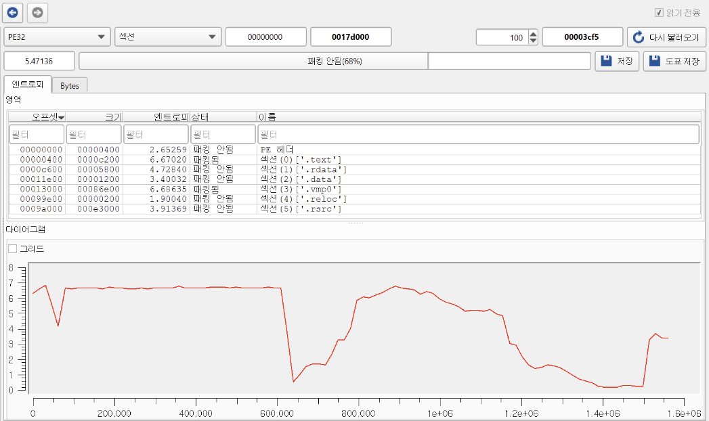
If we check the entropy view in DiE, we can see a typical pattern for Virtualization mode. The .text section is obfuscated, and the presence of .vmp0 indicates that VMP’s core VM bytecode lives there. Entry stub and initialization stub are packed, and the runtime VM engine is expected to reside in .vmp0.
We will follow the flow WinMain → UnpackMe → Run and carefully locate where the VMEntry actually is.
Road to VMEntry
int __stdcall WinMain(HINSTANCE hInstance, HINSTANCE hPrevInstance, LPSTR lpCmdLine, int nShowCmd)
{
void (__stdcall ***v4)(HINSTANCE); // eax
void (__stdcall ***v5)(HINSTANCE); // ecx
void (__stdcall **v6)(HINSTANCE); // eax
int result; // eax
SetUnhandledExceptionFilter(TopLevelExceptionFilter);
v4 = (void (__stdcall ***)(HINSTANCE))operator new(0x48u);
v5 = v4;
if ( v4 )
*v4 = (void (__stdcall **)(HINSTANCE))&UnpackMe::`vftable'; // vtable 설정
else
v5 = 0;
v6 = *v5;
UnpackMe* this = v5;
(*v6)(hInstance); // vtable[0] 호출
j__free(UnpackMe* this);
return result;
}
A typical virtualization-based obfuscation VM can usually be broken down into the following components:
-
VM Entry/VM ExitEntry: the region where native registers and stack state are copied into the VM state
Exit: after bytecode execution finishes, the VM state is written back to the original registers and stack
-
VM DispatcherReads the opcode at the virtual PC (
VIP), decides which handler to jump to, and repeatedly runs a fetch → decode → dispatch → execute loop -
Handler TableA table mapping each opcode to its handler function
Each handler implements the semantics of one VM instruction such as “virtual ADD”, “virtual XOR”, or “virtual branch”
For a real-world challenge like DevirtualizeMe, the first step is to locate the VMEntry. Only after finding the VMEntry can we reason about the VM state layout; I will discuss the VM state in more detail later.
The WinMain() function itself is structurally simple. From a devirtualization perspective, note that VMP usually virtualizes only certain target functions and leaves the path leading up to those functions in normal C++ code. So here we just need to confirm that vtable[0] is in fact UnpackMe::Run and then move on.
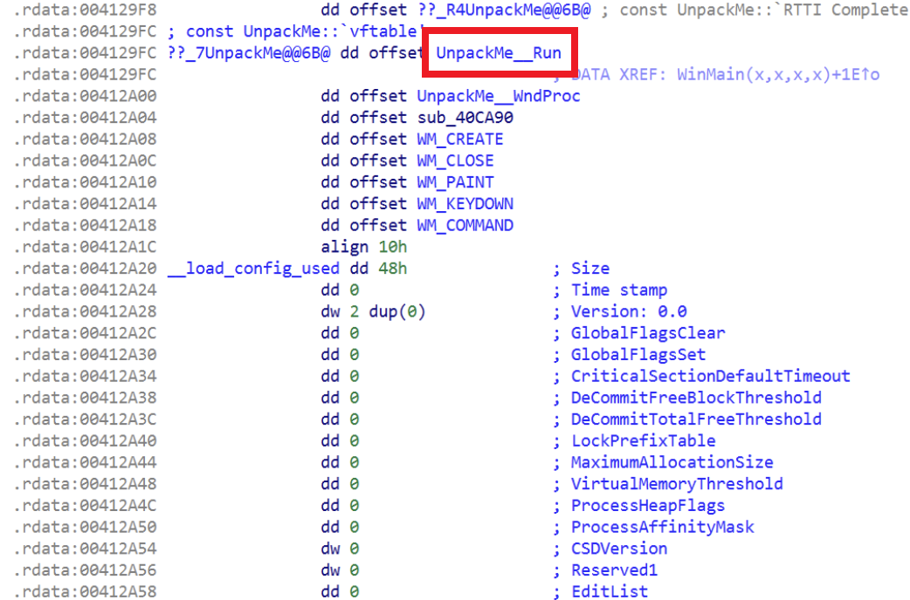
Following the vtable, we find that the C++ class UnpackMe’s vtable lives in the .rdata section. When IDA successfully reconstructs RTTI, it attaches the symbol ??_7UnpackMe@@6B@ and automatically names the first vtable entry as UnpackMe::Run. Let’s now jump into UnpackMe::Run, which opens the main loop.
int __thiscall UnpackMe::Run(void *this, HINSTANCE hInst)
{
*((DWORD*)this + 1) = hInst;
WNDCLASSEXW wc = {0};
wc.cbSize = sizeof(wc);
wc.style = 3;
wc.lpfnWndProc = (WNDPROC)sub_40CC70;
wc.hInstance = hInst;
wc.lpszClassName = L"WndClass_DevirtualizeMe";
RegisterClassExW(&wc);
((void (__thiscall*)(void*))(*(DWORD*)this + 8))(this);
while ( GetMessageW(&Msg, 0, 0, 0) )
{
TranslateMessage(&Msg);
DispatchMessageW(&Msg); // 여기서 WndProc 체인으로 들어감
}
}
From a devirtualization point of view, Run acts as a kind of gatekeeper into the VM. When the user presses the P key, the program flows through this loop and eventually reaches the VMProtect entry point.
This function registers a window class, sets lpfnWndProc = sub_40CC70 as the global WndProc, and then repeatedly calls DispatchMessageW inside the message loop. All key input (including P) goes through this message loop and eventually arrives at WndProc, which then routes messages into UnpackMe’s member functions.
LRESULT __stdcall WndProc(HWND hWnd, UINT Msg, WPARAM wParam, LPARAM lParam)
{
if ( dword_415F08 )
// vtable[1] = UnpackMe::WndProc(sub_40CB60)
return ((int (__thiscall*)(void*, HWND, UINT, WPARAM, LPARAM))
(*(DWORD*)UnpackMe* this + 4))(
dword_415F08, hWnd, Msg, wParam, lParam);
else
return DefWindowProcW(hWnd, Msg, wParam, lParam);
}
The important point here is that the OS has no idea that a C++ class named UnpackMe even exists, nor how many instances there are. The OS only knows that for windows of class WndClass_DevirtualizeMe, the WndProc is sub_40CC70, and that function internally forwards messages into UnpackMe::WndProc.
In other words, from a devirtualization perspective, all keyboard messages eventually end up in UnpackMe::WndProc. Therefore we only need to see how this WndProc() handles WM_KEYDOWN.
int __thiscall UnpackMe::WndProc(void *this,
HWND hWnd,
UINT Msg,
WPARAM wParam,
LPARAM lParam)
{
if ( Msg > 0x14 )
{
if ( Msg <= 0x111 )
{
switch ( Msg )
{
case 0x100: // WM_KEYDOWN
// vtable[6] = OnKeyDown
return ((int (__thiscall*)(void*, HWND, WPARAM, LPARAM))
(*(DWORD*)this + 24))(
this, hWnd, wParam, lParam);
case 0x111: // WM_COMMAND
...
}
}
}
...
}
When WM_KEYDOWN arrives, this function forwards control to OnKeyDown, which is mapped to vtable[6]. Up to this point we are still just in the message routing layer, and no VMProtect virtualized code has appeared yet. But we do not have to be disappointed—things are about to get more interesting.
int __thiscall UnpackMe::OnKeyDown(int this,
HWND hWnd,
WPARAM wParam,
LPARAM lParam)
{
if ( wParam == 'P' )
proc();
return 0;
}
OnKeyDown is where the key input is actually checked. When wParam equals the character 'P' (0x50), it calls proc(). All other key presses are ignored.
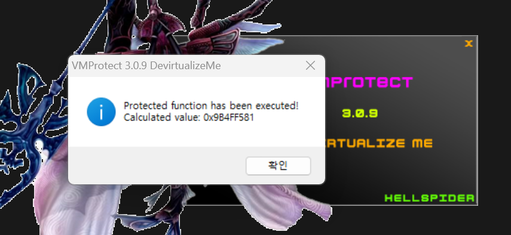
If you run the program and press P, a message box appears with some address information. That entry point is effectively what we call vir_Entry().
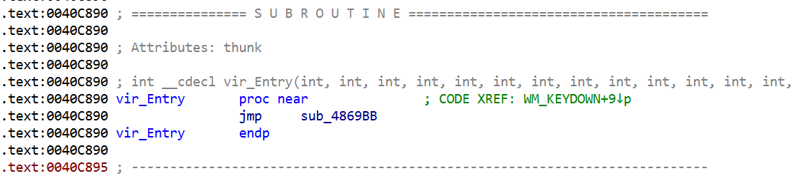
From this point onward IDA shows call analysis failed and cannot decompile the function. This means that inside this function, there are abnormal control flows, indirect branches, and sequences that scramble the stack/registers, making it hard to lift back to normal C code. In other words, from the perspective of building or using a devirtualizer, this vir_Entry() becomes our starting point.
By static analysis we traced the full path to the virtualized code as:
WinMain → UnpackMe::Run → DispatchMessage → UnpackMe::WndProc → OnKeyDown → proc()
and we confirmed that proc() (and vir_Entry inside it) is where VMEntry and the body of the VMProtect-virtualized function live.
Now that we have the VMEntry address, let’s attach a debugger and follow the execution. Starting at 0x004869BB, you can see VMProtect’s characteristic VM engine code: repeated patterns of push, call, xor, add, and so on, together with instructions like mov eax, [esi] / add esi, 4 that repeatedly load from the bytecode stream. This shows clearly that VMProtect is updating virtual registers and the bytecode pointer (ESI) while stepping through handlers.
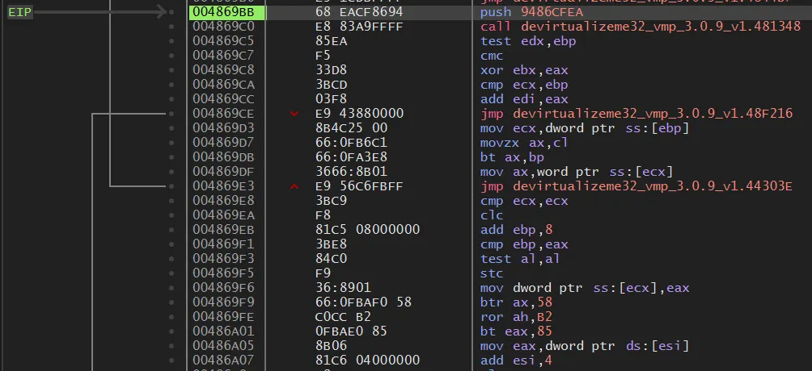
Trying to analyze the entire VM engine as one big CFG is practically impossible for a human. VMProtect fills the code with thousands of junk instructions and aggressive control-flow flattening, making the actual VM dispatcher and handler paths extremely tangled.
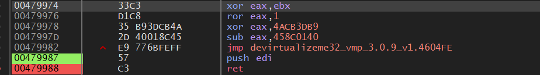
At first, I tried walking through the handlers and dispatcher in the debugger, chasing jmp instructions to the end in the hope that something meaningful would appear. Instead, I repeatedly landed on trivial “trampoline” handlers that only redirected control elsewhere without doing any semantically interesting work. This pattern repeated over and over.
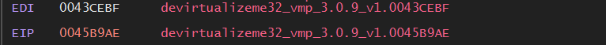
I wanted to catch a VMExit, but no matter how long I followed the flow, it was just handler → dispatcher → handler → ... like an endless staircase to heaven. From the debugger’s point of view, it felt impossible to ever escape this loop. On top of that, the VM does not use physical registers like a normal CPU. It hides values in virtual registers such as VIP and VSP and in encrypted stack regions. Staring at EAX all day yields nothing meaningful.
… At this point I felt that my lifetime was too short to finish this using only live debugging. Time to look for another approach.
Patch
0040D153 FF10 call dword ptr [eax]
0040D155 FF35 085F4100 push dword ptr [415F08]
0040D15B E8 623FFFFF call 4010C2
0040D160 83C4 04 add esp, 4
0040D163 5D pop ebp
0040D164 C2 1000 ret 10
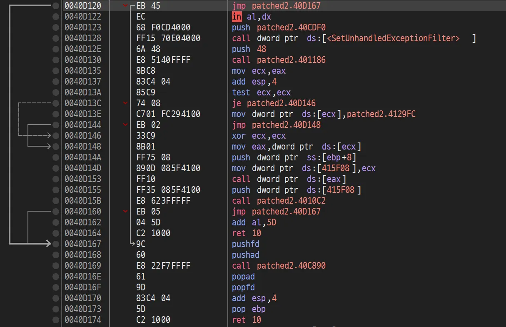
To trace the program more effectively, I first applied a small patch to the original binary. For reasons I am not certain about (whether intentional or accidental), when run under Intel Pin, this challenge binary stayed in the background and did not respond to my key presses. So I modified the binary so that right after startup it immediately jumps into VM Entry, without waiting for me to press P.
Collecting Trace with Pin
Intel Pin is a dynamic binary instrumentation tool that lets you inject analysis code into a running program. Regardless of what kind of obfuscation is applied, Pin can intercept and log every single instruction that actually executes. It will not miss even one instruction.
To collect traces, I first identified several key addresses through static analysis:
- gDispEntry (
0x004869BB): VM Entry (dispatcher entry point)
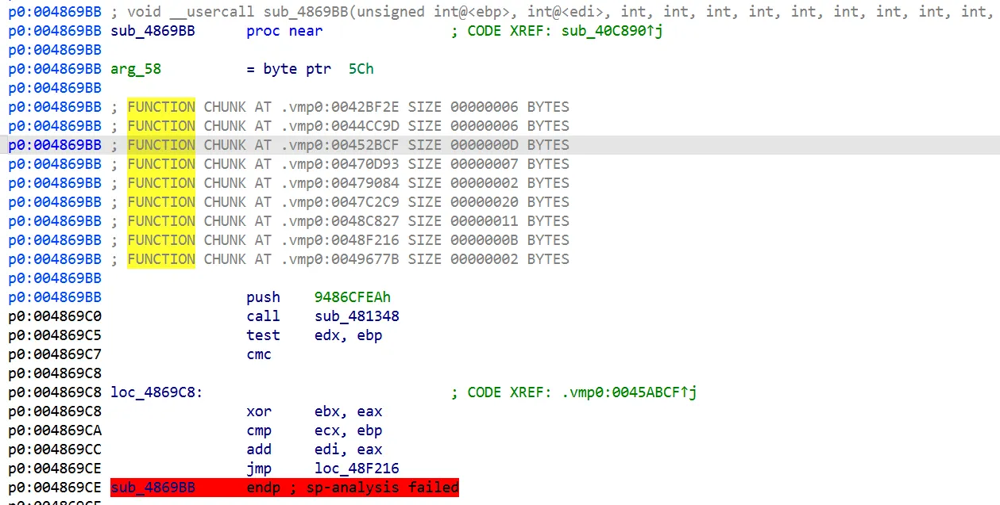
- gHandler82 (
0x004181BB): entry point of a specific handler (ID 82) found through analysis
24566 vmtrace.out
i:0x004869bb:5:68EACF8694
r:0x004869c0:0x00401dcd:0x00000000:0x97010000:0x00000000:0x0000000a:0x004011fc:0x0019ff28:0x0019ff20:0x00000202
i:0x004869c0:5:E883A9FFFF
r:0x00481348:0x00401dcd:0x00000000:0x97010000:0x00000000:0x0000000a:0x004011fc:0x0019ff28:0x0019ff1c:0x00000202
i:0x00481348:1:51
r:0x00481349:0x00401dcd:0x00000000:0x97010000:0x00000000:0x0000000a:0x004011fc:0x0019ff28:0x0019ff18:0x00000202
i:0x00481349:5:E9CA50FBFF
r:0x00436418:0x00401dcd:0x00000000:0x97010000:0x00000000:0x0000000a:0x004011fc:0x0019ff28:0x0019ff18:0x00000202
i:0x00436418:1:55
I first extracted from the trace a region corresponding to one full cycle of the VMProtect VM, and that alone already produced on the order of n0,000 lines of log. At this scale it becomes essential to split the trace at handler boundaries and automatically identify repeating patterns.
Lines starting with i: record the executed instructions,
and lines starting with r: record the register and stack state at that point.
Jonathan Salwan’s VMProtect-devirtualization project was extremely helpful here.
Identifying VM main loop and handler candidates with uniq -c
108 0x0047f287
108 0x0044a8ae
108 0x0044a8ac
108 0x0044a8ab
108 0x0044a8a7
107 0x004181bb
64 0x00464679
10 0x0049acd6
10 0x0049acd4
10 0x0049acd2
I computed the execution count per address from the trace, using a uniq -c style analysis to list the most frequently executed locations. Static analysis then allowed me to categorize them as follows:
-
Highest frequency, 108 times: VM dispatcher
-
VM Dispatcher
Addresses like
0x0047f287and0x0044a8a7appeared exactly 108 times each. These are pieces of dispatcher code. The dispatcher implements the CPU-like cycle in software (fetch → decode → dispatch → execute). Since the dispatcher itself does not perform interesting semantics, we can skip over it for now.
-
-
Second highest frequency, 107 times: handler ID 82
-
Most frequently used handler (
LCONST)Address
0x004181BBis a strong candidate for a constant-load handler once we consider VMProtect’s stack-based VM design. In a stack machine, most operations happen on the stack, so load/copy/move-style operations tend to be used heavily. Prioritizing the most frequently executed handler for analysis is usually efficient.
-
Running the Pin Trace Again
I then extended the original Pin tool (based on the template provided with Intel Pin) into a specialized Pintool that captures only the ID 82 handler. The goal is to reverse engineer what the VMProtect VM actually does for this single opcode.
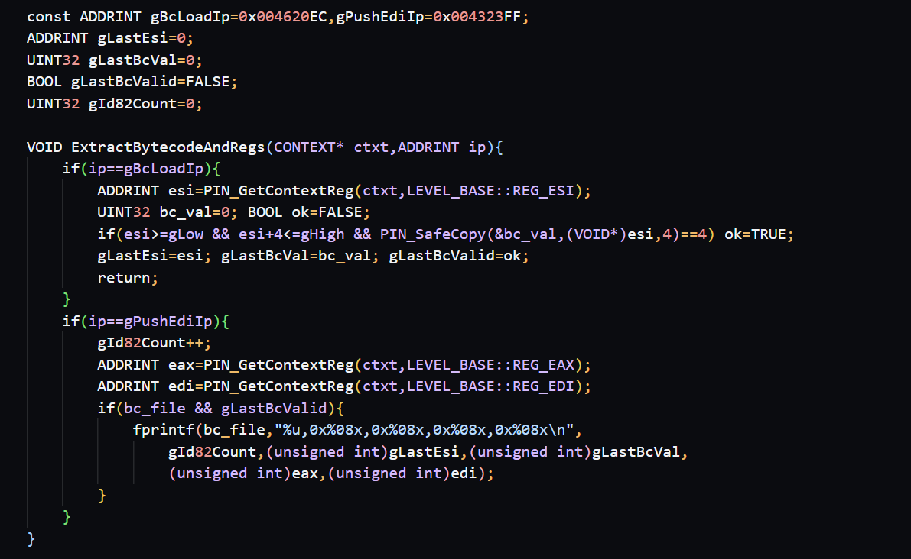
To capture the behavior of a single VM instruction dynamically, I built Pin support to:
- Anchor each VM instruction using two fixed IP locations
- Capture the 4 bytes pointed to by
ESIat the moment the bytecode is loaded - Record
EAX/EDIat the point where the handler finishes its computation and pushes the result onto the stack (using Pin’s CONTEXT)
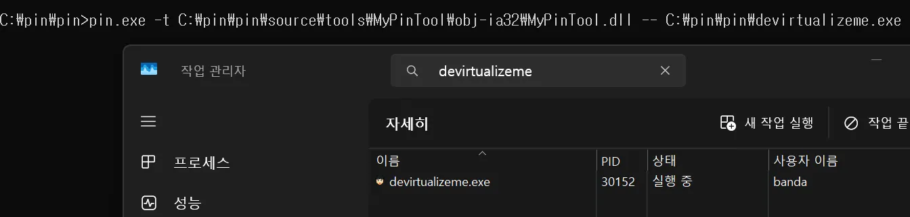
Using the built MyPinTool, I collected three types of information:
1. vmtrace.out: the complete x86 instruction trace from dispatcher entry to VM exit
#main exe: [0x00400000, 0x00581fff)
004869bb 68 EA CF 86 94
004869c0 E8 83 A9 FF FF
00481348 51
00481349 E9 CA 50 FB FF
00436418 55
00436419 50
0043641a 66 F7 D5
0043641d E9 15 92 FE FF
0041f637 57
0041f638 0F BF FF
...
This file contains every x86 instruction executed from 0x004869BB (VM dispatcher entry) until the VM finishes. Each line records the instruction address and machine bytes. The script that walks the trace also dumps a plain text file side by side.
2. bytecode_values.txt: the [ESI] value when entering handler ID 82 (i.e., the VM instruction operand)
1,0x0047fa5f,0x1ecbf564,0x000271c9,0x004892af
2,0x0045cb33,0x1ec6b25f,0xfffcff9f,0x00432085
3,0x0046ef95,0x1ec5393d,0xfffdab5b,0x0043cc41
# Total ID82 calls: 3
If we open the extracted bytecode_values.txt, we can see which constants/operands were fed into handler ID 82. By comparing the operand patterns across multiple calls, we can infer whether this handler is pushing constants onto the stack, applying certain transforms to the operand, or using it as an index, and so on. Later, we will feed these concrete values into Triton when performing symbolic execution.
3. id82_registers.txt: register snapshots at handler entry
=== VM Entry (0x004869bb) ===
INIT_ESI=0x0000000a
INIT_EBP=0x0019ff74
INIT_ESP=0x0019ff04
===========================
ID82_001: IP=0x004323ff EAX=0x000271c9 EBX=0x00458b96 ECX=0x00000020 EDX=0x00000000 ESI=0x0047fa63 EDI=0x004892af EBP=0x0019fed8 ESP=0x0019fe18 BYTECODE=0x1ecbf564
ID82_002: IP=0x004323ff EAX=0xfffcff9f EBX=0xffb934ac ECX=0x00000020 EDX=0x0000422a ESI=0x0045cb37 EDI=0x00432085 EBP=0x0019fcd0 ESP=0x0019fc10 BYTECODE=0x1ec6b25f
ID82_003: IP=0x004323ff EAX=0xfffdab5b EBX=0xffbb44ce ECX=0xdcedb11a EDX=0x00000000 ESI=0x0046ef99 EDI=0x0043cc41 EBP=0x0019fcc0 ESP=0x0019fc00 BYTECODE=0x1ec5393d
# Total ID82 calls: 3
This file logs the VM entry state and, for each ID 82 call, the exact register values right before executing the handler, along with the bytecode operand (BYTECODE). In other words, for handler ID 82 we now have:
- The handler’s code
- Its input (bytecode and register state)
- The initial VM state at entry
This matches our goal of fully reconstructing the semantics of a single VM opcode.
Splitting the VM-only trace by ID 82 execution segments
With these logs in hand, we can now start restoring the meaning of individual VM handlers.
total ins: 58414
ID82 entries: 107
ID82 segments (with glue): 106
written id82_segments.json
To do that, I wrote a script that takes vmtrace.out, locates each occurrence of ID 82, and slices the trace into segments corresponding to “one execution of ID 82, including its glue code.” Each such segment is then written into a JSON file. Earlier we counted 107 entries for ID 82; the script extracted 106 segments into the JSON.
{
"idx": 1,
"start_ip": 4293051,
"end_ip": 4715143,
"ins": [
"004181bb FF E7",
"00468429 8B C5",
"0046842b 66 85 F2",
"0046842e 81 ED 04 00 00 00",
"00468434 66 3B FE",
"00468437 89 44 25 00",
"0046843b 9F",
"0046843c 13 C6",
"0046843e E9 C1 EC FE FF",
"00457104 8B 06",
"00457106 3B E6",
"00457108 81 C6 04 00 00 00",
"0045710e 33 C3",
"00457110 E9 BB 7D FE FF",
"0043eed0 D1 C8",
"0043eed2 35 B9 3D CB 4A",
"0043eed7 F5",
"0043eed8 F9",
"0043eed9 66 85 C4",
"0043eedc 2D 40 01 8C 45",
"0043eee1 E9 FC 23 FF FF",
"004312e2 D1 C0",
"004312e4 33 D8",
"004312e6 03 F8",
"004312e8 E9 B3 DE 02 00",
"0045f1a0 E9 02 B7 FE FF",
"0044a8a7 8D 44 24 60",
"0044a8ab F5",
"0044a8ac 3B E8",
"0044a8ae E9 D4 49 03 00",
"0047f287 0F 87 2E 8F F9 FF"
]
}
Each segment contains the flow from entry into ID 82 → various glue/shared code → return to the dispatcher. However, there is still a lot of VMProtect-inserted noise mixed in, so this alone does not yet isolate the pure handler body. We need to keep going.
Clustering ID 82 patterns
total segments: 106
unique patterns: 70
==== pattern 1 size 5
indices: [20, 40, 60, 78, 94]
==== pattern 2 size 5
indices: [21, 43, 62, 82, 99]
==== pattern 3 size 4
indices: [19, 39, 59, 93]
==== pattern 4 size 4
indices: [22, 65, 84, 103]
...
Next, I loaded the JSON, compared each segment’s byte sequence, and grouped those with identical sequences into clusters. When we do this per handler, segments with exactly the same instruction pattern end up in the same cluster. For example, in pattern 1, segments 20, 40, 60, 78, and 94 all share the same sequence of bytes and thus form one cluster.
The purpose of this clustering is to pick one representative pattern per handler. For ID 82, we can choose, say, index 20 from pattern 1 as the canonical example and use it as a reference to understand the handler’s semantics.
Simulating Handler ID 82 with Triton
Using the clustering result, I dumped the bytes for the segment at index 20 (pattern 1) as a contiguous block of x86 code:
written id82_handler.asm from idx 20
004181bb FF E7
0044fa7a 0F B6 06
0044fa7d 81 C6 01 00 00 00
0044fa83 32 C3
0044fa85 66 F7 C2 DE 7B
0044fa8a F9
0044fa8b 2C 3A
0044fa8d D0 C8
0044fa8f F6 D8
0044fa91 E9 48 9B 02 00
Comparing this with the corresponding IDA disassembly, we can see the structure more clearly:
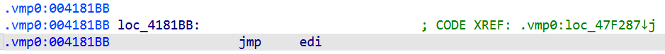
0x004181BB: FF E7 → 0x004181BB jmp edi is the “glue” entry point where the dispatcher has already loaded the handler’s address into EDI and now jumps there.
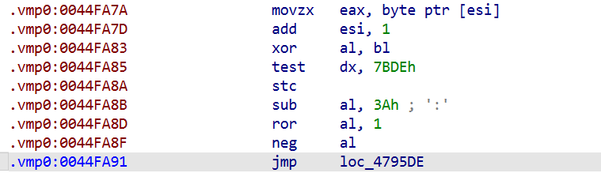
From 0x0044FA7A onward is the essential body of ID 82’s front half.
This code performs movzx eax, byte ptr [esi] / add esi, 1 to consume the first byte of bytecode (the opcode), then scrambles AL using XOR, SUB, ROR, NEG, etc., and finally jumps onward. Later, it executes mov eax, [esi] / lea esi, [esi+4] to read 4 bytes, presumably the operand. That 4-byte value is decrypted via a series of operations and used to update EBX. Control then returns to the dispatcher loop at 0x4323ff.
So, by combining Pin’s trace with IDA disassembly, we have reconstructed the complete native code for handler ID 82 as seen in vmtrace.out. We are almost there.
But this is still not yet the end. To fully understand the mathematical transformation encoded by this handler, we need to load this code into Triton, feed it the initial register state and bytecode values we collected earlier, and perform symbolic execution.
Tracking state changes
Using Triton to execute the ID 82 path and compare the registers before and after, we obtain a trace like the following:
0x4442f2: shr dh, cl
0x43641a: not bp
--- [ Logic Start (0x41F637) ] ---
0x41f638: movsx edi, di
0x41f63c: lahf
0x41f63d: bts ebp, esi
0x41f641: cmp bh, 0xb4
0x41f645: shr bp, 0xa6
0x41f649: sub ebx, edx
0x41f64b: test esi, ebp
0x41f64e: xchg ah, bh
0x41f650: sub ax, bx
0x41f653: movsx ebx, bp
0x41f656: mov eax, 0
0x41f65b: not si
0x41f65e: xadd ebp, esi
0x41f662: mov esi, dword ptr [esp + 0x28]
0x41f666: add esi, 0x55106798
0x41f66c: neg esi
0x41f66e: rol edi, 0x70
0x41f671: add esi, 0x69733a52
0x41f677: btr ebp, 0xc0
0x41f67b: rol esi, 1
0x41f67d: sbb ebx, 0x37516d2d
0x41f683: not esi
0x41f685: clc
0x41f686: cmp eax, esp
0x41f688: xor ebp, esp
0x41f68a: add esi, eax
0x41f68c: setns al
0x41f68f: mov ebp, esp
0x41f691: sub bx, sp
0x41f694: rol ax, cl
0x41f697: dec di
0x41f69a: sub esp, 0xc0
0x41f6a0: jmp 0x453e79
0x453e79: mov ebx, esi
0x453e7b: bt eax, esp
0x453e7e: btc ax, 0x47
0x453e83: btr eax, edx
0x453e86: mov eax, 0
0x453e8b: jmp 0x4620dd
0x4620dd: sub ebx, eax
0x4620df: shld eax, eax, 0xe3
0x4620e3: sub eax, edi
0x4620e5: stc
0x4620e6: lea edi, [0x4620e6]
0x4620ec: mov eax, dword ptr [esi]
0x4620ee: cmc
0x4620ef: test cl, 0x19
0x4620f2: lea esi, [esi + 4]
0x4620f8: cmc
0x4620f9: test ebx, 0x76f532e4
0x4620ff: xor eax, ebx
0x462101: ror eax, 1
0x462103: stc
0x462104: xor eax, 0x4acb3db9
0x462109: sub eax, 0x458c0140
0x46210e: rol eax, 1
0x462110: xor ebx, eax
0x462112: cmc
0x462113: cmp bx, sp
0x462116: clc
0x462117: add edi, eax
0x462119: jmp 0x4323ff
--- [ Logic End (0x432400) ] ---
This is the asm trace produced by a Triton-based analysis script. It reconstructs the execution path of handler ID 82 using both vmtrace.out and the bytes from the actual binary.
Comparing registers before and after execution for each test case yields:
=== case 1 bc = 0x1ecbf564
init EAX = 0x271c9 EBX = 0x458b96 ESI = 0x47fa63 EDI = 0x4892af
final EAX = 0x19fe78
final EBX = 0xafe65f2
final ECX = 0x20
final EDX = 0x0
final ESI = 0x47fa68
final EDI = 0xb0480ee
final EBP = 0x19fed4
final ESP = 0x19fe18
diff EAX = 0x1b8fb1 EBX diff = 0xabbee64
=== case 2 bc = 0x1ec6b25f
init EAX = 0xfffcff9f EBX = 0xffb934ac ESI = 0x45cb37 EDI = 0x432085
final EAX = 0x19fc70
final EBX = 0x20ae78f3
final ECX = 0x20
final EDX = 0x422a
final ESI = 0x45cb3c
final EDI = 0xdf5a6d09
final EBP = 0x19fccc
final ESP = 0x19fc10
diff EAX = 0xffe503ef EBX diff = 0xdf174c5f
=== case 3 bc = 0x1ec5393d
init EAX = 0xfffdab5b EBX = 0xffbb44ce ESI = 0x46ef99 EDI = 0x43cc41
final EAX = 0x19fc60
final EBX = 0x20ae78f3
final ECX = 0xdcedb11a
final EDX = 0x0
final ESI = 0x46ef9e
final EDI = 0xdf590927
final EBP = 0x19fcbc
final ESP = 0x19fc00
diff EAX = 0xffe4573b EBX diff = 0xdf153c3d
We can extract the following key observations:
1. In every case, ESI increases by exactly 5.
- Case 1: 0x47fa63 → 0x47fa68 (+5)
- Case 2: 0x45cb37 → 0x45cb3c (+5)
- Case 3: 0x46ef99 → 0x46ef9e (+5)
So handler ID 82 consumes 5 bytes from the bytecode stream. This matches the earlier code: `movzx eax, byte ptr [esi]` / `add esi, 1` consumes the 1-byte opcode, and later `mov eax, [esi]` / `lea esi, [esi + 4]` consumes 4 more bytes. Together, that is `1 + 4 = 5` bytes.
2. EBX is updated to a completely new value.
The final `EBX` has no obvious direct relation to its initial value and is clearly the result of some transform. The `bc` (bytecode) values like `0x1ecbf564` go through the decryption routine (involving operations like `NOR`, `ADD`, `ROL`, etc.) to produce the final `EBX` values such as `0x0afe65f2`. Notice that in cases 2 and 3 the final `EBX` is the same: `0x20ae78f3`. Two different encrypted bytecode values (`0x1ec6b25f`, `0x1ec5393d`) converge to the same result, strongly suggesting a decryption function.
Putting this together:
- Handler ID 82 reads from the bytecode stream:
- 1 byte for the opcode
- 4 bytes for an encrypted immediate value
- It then runs a complex transform (XOR, SUB, ROL, etc.) on that 4-byte value and writes the result into
EBX, effectively placing a constant on the virtual stack.
This behavior matches what we would expect from an LCONST / PUSH constant-style handler.
So what is the actual arithmetic?
TARGET_HANDLERS = [
0x44A8A7, 0x47F287, 0x4181BB, 0x40356C, 0x404F43,
0x405B60, 0x405CB6, 0x405CE2, 0x404F5E, 0x404419,
0x404E83, 0x4046BF, 0x4046DC, 0x4892AF, 0x41A261,
0x45F79C, 0x496B0F, 0x474C45, 0x437E65, 0x493FB7,
0x43CB8A, 0x46688C, 0x45B9AD, 0x432085, 0x484226
]
The analysis above shows that we cannot reconstruct the full program logic from ID 82 alone. So I extended the same pipeline used for ID 82 to other handlers. Because there are many handlers, I first used static analysis plus trace-based hotspot analysis to pick only those handlers that are frequently called or appear semantically important.
All the handlers reveal themselves
>>> Handler 0x432085 (Length: 39)
----------------------------------------
[M] 0x432085: movzx eax, byte ptr [esi]
[!] 0x432088: rol cx, 0xc
[!] 0x43208c: add esi, 1
[!] 0x432096: xor al, bl
[!] 0x43209a: ror cx, 0xf6
[!] 0x43209e: sub al, 0x3a
[!] 0x4320a0: ror al, 1
[!] 0x4320a2: neg al
[!] 0x4320aa: not al
[!] 0x4320b1: and cx, si
[!] 0x4320b4: xor bl, al
[!] 0x4320b6: mov ecx, dword ptr [ebp]
[!] 0x4320bf: add ebp, 4
[!] 0x4320c5: mov dword ptr [esp + eax], ecx
[!] 0x4320c8: ror eax, 0xd2
[!] 0x4320cb: mov eax, dword ptr [esi]
[!] 0x4320cd: add esi, 4
[!] 0x4320de: xor eax, ebx
[!] 0x4320e1: ror eax, 1
[!] 0x4320e3: xor eax, 0x4acb3db9
[!] 0x4320ee: sub eax, 0x458c0140
[!] 0x4320f3: rol eax, 1
[!] 0x4320f5: xor ebx, eax
[!] 0x4320fd: add edi, eax
----------------------------------------
...
Each of the addresses is the entry point of a VM handler. For each such entry, I repeated the same process used for ID 82:
- Segment splitting
- Pattern clustering
- Triton-based semantic extraction
The sample above shows the extracted semantics for handler 0x00432085. From this we can deduce:
- It advances
ESIand consumes bytes from the bytecode stream - It updates
EBX,EDI, and stack locations like[esp + eax]following a consistent pattern - It reads and writes virtual registers located on the stack, combining constants and memory values to construct new values
By iterating this process, we can summarize each handler as a higher-level VM instruction: load, store, add, logical operations, branches, and so on. That is, we start to see each handler as one instruction in the VM’s instruction set.
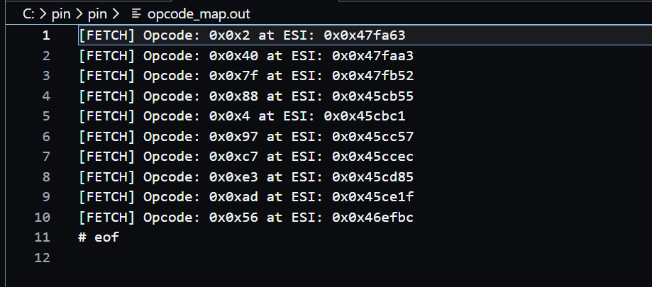
Once this is in place, the next step is to map each opcode value to its handler address. For this, I instrumented the VM dispatcher in Pin at the FETCH site and logged the opcode values being read.
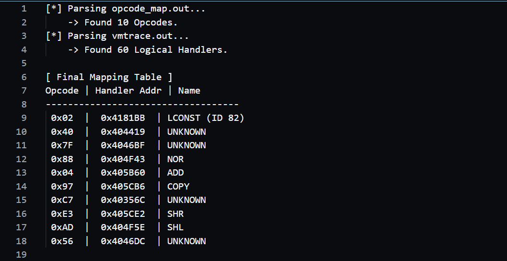
Parsing that opcode log together with vmtrace.out allowed me to reverse-map each opcode to a handler entry address. For example, the opcode corresponding to ID 82 turned out to be 0x02.
Building the Devirtualizer
At this stage we now have a one-to-one mapping between VM bytecodes and the actual handler addresses. The final step is to build a dedicated devirtualizer that reconstructs the entire virtualized function as native x86 and patches it back into the binary.
The overall design is:
-
Read a mapping file that contains opcode (e.g.
0x02,0x40,0x88…), the handler entry address, and a summary of its semantics. This becomes the opcode → [handler address, meaning, pseudocode] table. -
Parse the VM bytecode stream from start to finish.
-
For each opcode, emit a corresponding native x86 code snippet which we prepared in advance, for example:
-
LCONST→MOV EBX, imm32 -
ADD→ADD [ESP+4], EAXand so on.
-
-
Concatenate all these snippets into a single region, forming a new native function body.
-
Finally, patch the original binary so that
vir_Entryjumps directly into this new native function, bypassing the VM engine.
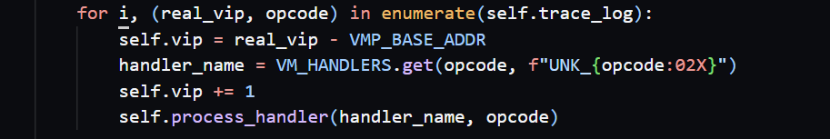
Here is part of my devirtualizer code. The loop iterates over each VM instruction and computes the offset into the .vmp0 dump via real_vip - VMP_BASE_ADDR. It then skips the 1-byte opcode, looks up the handler name from VM_HANDLERS, and proceeds with reconstruction.
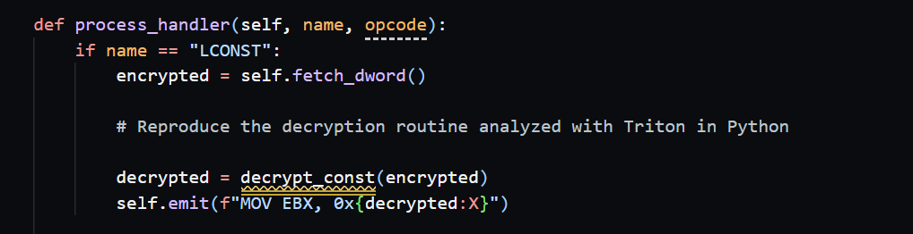
val = (encrypted + 0x55106798) & 0xFFFFFFFF
val = (0 - val) & 0xFFFFFFFF
val = (val + 0x69733a52) & 0xFFFFFFFF
val = ((val << 1) | (val >> 31)) & 0xFFFFFFFF
decrypted = ~val & 0xFFFFFFFF
In the comments for each handler, I re-implemented the arithmetic sequence obtained by symbolically executing the handler with Triton, writing it out as 32-bit modular arithmetic in Python, as in the example above.
For instance, suppose the handler takes a 32-bit encrypted constant as input, then applies exactly these steps as observed in the VM:
- Add a constant
- Compute
0 - val - Add another constant
- Rotate left by 1 bit
- Apply a bitwise
NOT
We can encode that logic exactly as shown, yielding a decrypted value that matches what the VM computes.
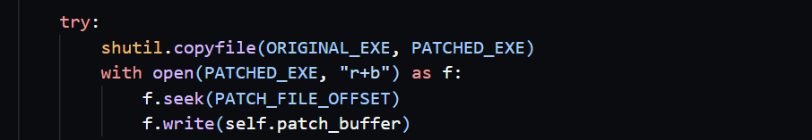
For key handlers like ADD, NOR, COPY, SHL, SHR, I distilled their stack-top operations plus flag reconstruction into clean native code fragments, and then used the Keystone assembler to convert them into machine code. Those bytes were pushed into a patch_buffer in order, and the devirtualizer overwrote a pre-allocated region in a duplicated binary named devirtualizeme_unpacked.exe with this buffer.
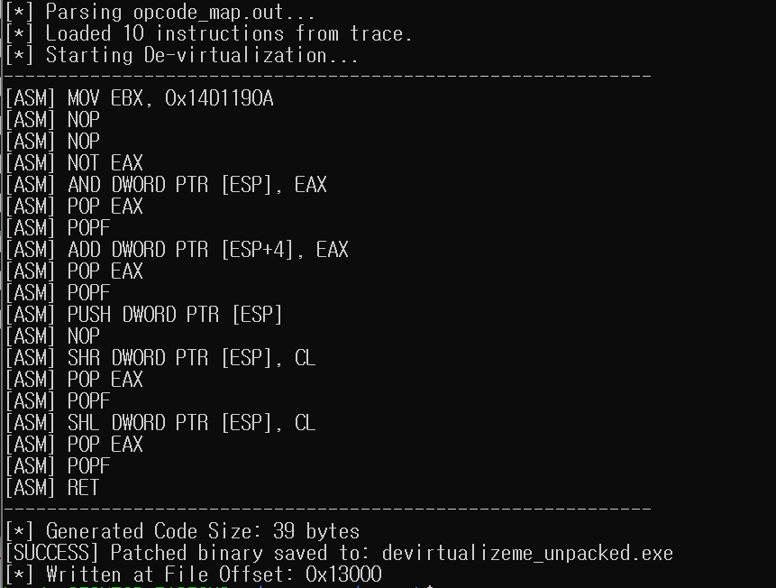
At the end of this long journey, we finally get to see the restored native x86 code: the devirtualized function. This code is entirely generated from the data we collected and analyzed and represents the original logic in a straightforward x86 form. If you open this region in IDA on the patched binary, you will now see clean assembly in place of VMP’s obfuscated engine code.
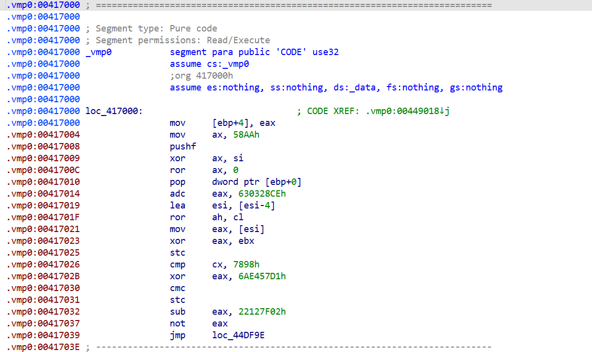
To compare before and after, I looked at the beginning of the .vmp0 region. Before patching, the section is filled with VMP-specific obfuscated code: meaningless operations and tangled jumps.
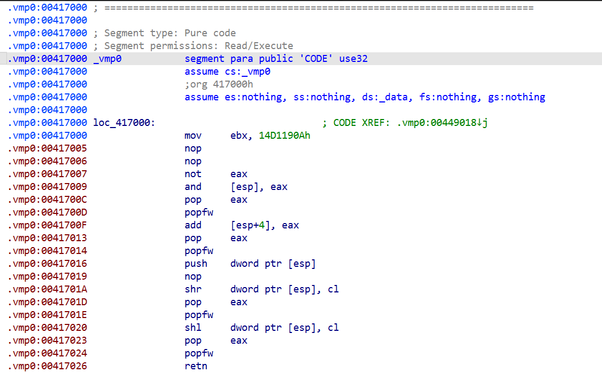
After patching, the same location now contains a normal native x86 function that pops values from the stack and performs simple operations such as AND, SHR, and SHL. When you run the patched binary, it no longer goes through the VMProtect engine; instead, it executes the restored native function directly. Pressing P still triggers the same virtualized logic and shows the original message box—just without the VM.
Wrapping Up: Devirtualization Success
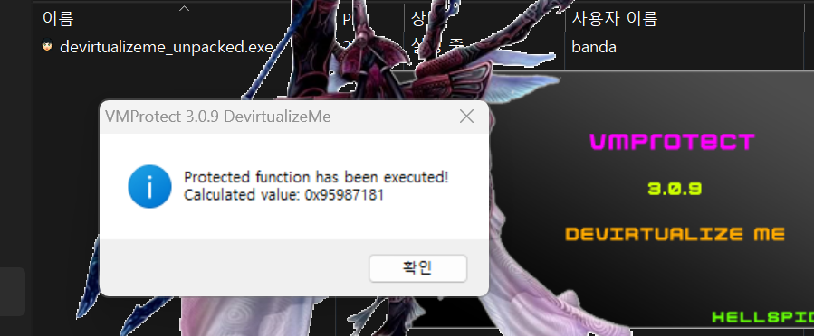
I will conclude with a screenshot showing the successful devirtualization. For the virtualized target function, I patched vir_Entry so that it jumps directly into the native code block I generated instead of the VMP dispatcher.
Originally I planned to stop at Part 2, but now I feel like trying even harder virtualization challenges and unpacking them as well. While writing Part 2, I also thought a lot about how far one could push devirtualization by combining this approach with LLVM, and if I ever write a follow-up in this series, that will very likely be the topic.
Thank you for joining me on this journey through deobfuscation. 😁